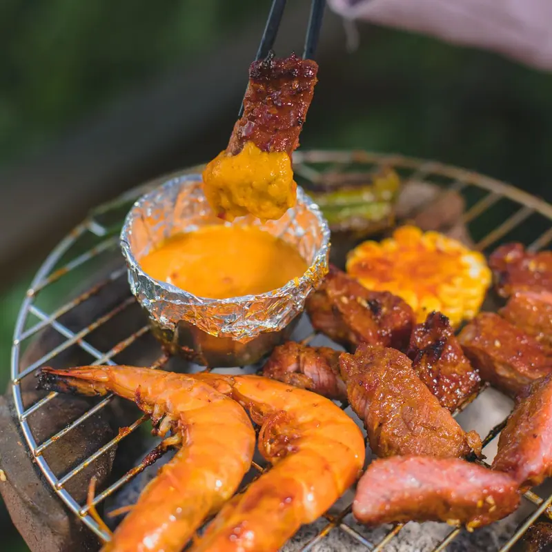

TL;DR: Một quán nướng ngon ở Đà Lạt thường lộ ra qua 7 dấu hiệu nhìn được ngay tại bàn: thịt sống tươi và ráo, ướp vừa đủ, than đủ nóng và vỉ sạch, nước chấm có bản sắc, thực đơn ghi giá rõ, đánh giá Google gần đây ổn định, và chỗ ngồi chống được cái lạnh về đêm. Trạm Dừng Chill (111 Huỳnh Tấn Phát, cách trung tâm khoảng 7 km) là quán nướng than hoa tại bàn ngoài trời, mức chi phổ biến 150.000đ–400.000đ một người đã gồm VAT. Đó là quán của chúng tôi, nên phần tự chấm ở cuối bài ghi cả những điểm có thể chưa hợp với bạn.
Gõ "quán nướng ngon Đà Lạt" lên Google, bạn sẽ gặp rất nhiều danh sách "top quán" do nhiều trang tổng hợp, mỗi trang một kiểu. Quán ăn thì mở thêm, đóng bớt, đổi giá liên tục, nên danh sách viết từ vài năm trước rất dễ lệch với thực tế. Bài này đi theo hướng khác: chúng tôi là người làm tiệm nướng ở Đà Lạt, nên chia sẻ những dấu hiệu người trong nghề nhìn vào để biết một quán có ngon hay không. Bạn mang 7 dấu hiệu này tới quán nào cũng dùng được, kể cả quán của chúng tôi.
Quán nướng ngon ở Đà Lạt là quán như thế nào?
Quán nướng ngon ở Đà Lạt là quán làm tốt cả phần ăn lẫn phần ngồi: thịt tươi, ướp vừa, lửa than đủ nóng để thịt chín nhanh mà không cháy, và chỗ ngồi đủ ấm để bạn ăn thong thả giữa tiết trời se lạnh.
Phần ngồi ở Đà Lạt quan trọng hơn nhiều thành phố khác. Theo bảng khí hậu trên Wikipedia, mùa khô (tháng 11 – tháng 4) đêm trung bình chỉ khoảng 11–14°C, lạnh nhất vào tháng 1. Ngồi quanh bếp than giữa cái lạnh ấy là thứ làm nên tiếng của món nướng Đà Lạt, nhưng cũng có nghĩa là một bữa ngon có thể hỏng chỉ vì gió lùa, mưa tạt hay thịt nguội nhanh trên đĩa.
7 dấu hiệu nhận ra tiệm nướng ngon trước khi gọi món
Bảy dấu hiệu dưới đây đều nhìn, ngửi hoặc hỏi được ngay trong mười phút đầu ngồi vào bàn, trước khi bạn quyết định gọi thêm món.
1. Thịt sống nhìn tươi, ráo, mỡ trắng
Đồ nướng là món ăn lộ nguyên liệu rõ nhất: thịt mang ra bàn còn sống, bạn nhìn thấy trước khi nếm. Thịt tươi có màu đỏ hồng đều, mặt thịt ráo, không rỉ nước đục; phần mỡ trắng hoặc trắng ngà, không ngả vàng sẫm. Thịt có mùi lạ, mặt thịt nhớt hay thâm xám ở mép là lúc nên hỏi lại quán trước khi cho lên vỉ.
2. Ướp vừa đủ, có món để nguyên vị
Sốt ướp quá đậm, quá ngọt có thể che bớt mùi của miếng thịt kém tươi, nên một quán tự tin vào nguyên liệu thường có vài món chỉ nêm muối tiêu để bạn ăn ra vị thịt. Món ướp sẵn vẫn ngon, miễn vị ướp thấm vào thớ thịt chứ không chỉ là một lớp sốt phủ bên ngoài.
Ướp đúng cách còn có lợi cho sức khỏe. Bài "Giảm độc tố từ món nướng" trên VnExpress (2006) dẫn lời giáo sư Mark G. Knize, Phòng thí nghiệm quốc gia Lawrence Livermore (Mỹ): tẩm hoặc ướp thực phẩm với nước sốt trước khi nướng có thể làm giảm hơn 95% nguy cơ phát sinh HCA, nhóm chất sinh ra khi thịt được nướng ở nhiệt độ cao. Bài báo gợi ý ướp trước khoảng 20–30 phút.
3. Than đủ nóng, vỉ sạch, thịt không cháy đen
Than hoa đủ nóng làm mặt thịt se lại nhanh, giữ được nước bên trong; than yếu thì thịt chín lâu, khô và dễ dính vỉ. Vỉ đã bám cháy đen nên được thay, vì phần cháy dính lại làm món sau đắng và khét. Cũng bài báo trên khuyên thường xuyên trở món nướng để thịt chín đều, và bỏ những phần bị cháy sém vì đó là phần chứa nhiều độc tố nhất. Thấy vỉ đã đen, bạn cứ hỏi nhân viên có đổi vỉ được không.

4. Nước chấm có bản sắc, rau ăn kèm tươi
Cùng một miếng thịt, nước chấm quyết định nửa phần ấn tượng. Quán nướng ngon thường có ít nhất một loại nước chấm riêng, pha để làm nổi vị thịt chứ không lấn át nó, chẳng hạn muối ớt xanh chua cay cho bò và hải sản. Rau sống, dưa leo, kim chi ăn kèm cũng phải giòn và sạch, vì đó là phần giúp bạn ăn nhiều món nướng mà không ngán.
5. Thực đơn ghi giá rõ ràng
Món ngon mà tính tiền mập mờ thì bữa ăn vẫn để lại vị đắng. Trước khi gọi, hãy xem thực đơn có ghi giá từng món không, giá đã gồm VAT chưa, món tính theo phần hay theo cân, và quán tính theo suất buffet hay gọi lẻ. Buffet thì trả trọn suất dù ăn không hết; gọi lẻ thì gọi bao nhiêu trả bấy nhiêu.
6. Đánh giá Google: đọc bài mới nhất, đừng chỉ nhìn điểm
Điểm sao trung bình cho biết quán ổn hay không, còn số lượt đánh giá cho biết điểm đó đáng tin tới đâu: một quán điểm cao nhưng chỉ vài chục lượt đánh giá dao động mạnh hơn nhiều so với quán có vài nghìn lượt. Trên Google Maps, hãy sắp xếp đánh giá theo "Mới nhất" để biết dạo này quán ra sao, rồi đọc vài đánh giá 1–2 sao xem khách phàn nàn chuyện gì và quán trả lời thế nào.
7. Chỗ ngồi hợp thời tiết Đà Lạt
Ở Đà Lạt, chỗ ngồi ảnh hưởng tới vị món ăn nhiều hơn bạn nghĩ: gió lạnh làm thịt nguội nhanh, mưa chiều có thể làm bữa ăn ngoài trời dừng giữa chừng. Quán nướng hợp với Đà Lạt nên có khu mái che khi mưa, có cách giữ ấm cho khách ngồi ngoài trời, và đủ thoáng để khói than không ám vào tóc, áo.
Các kiểu quán nướng ở Đà Lạt: kiểu nào hợp với bạn?
Đà Lạt có nhiều kiểu quán nướng, mỗi kiểu ngon theo một cách riêng: nướng ngói, nướng đá, buffet nướng, BBQ kiểu Hàn và quán nướng than hoa ngoài trời ở ven đô. Chọn đúng kiểu hợp với nhóm mình quan trọng không kém chọn đúng quán.
| Kiểu quán | Ngon ở chỗ | Nên lưu ý |
|---|---|---|
| Nướng ngói | Thịt đặt trên miếng ngói đất nung hơ trên than, chín đều, ít bị lửa táp trực tiếp | Hỏi trước quán có thay ngói khi ngói đã bám cháy không |
| Nướng đá | Thịt chín áp trên phiến đá nóng, mỡ chảy ra ngoài nên ăn đỡ ngấy | Đá nguội dần trong bữa, nên hỏi quán có thay đá nóng không |
| Buffet nướng | Ăn bao nhiêu tùy sức, hợp nhóm ăn khỏe | Trả trọn suất dù ăn không hết; xem món nào nằm ngoài suất |
| BBQ kiểu Hàn | Thịt thái lát mỏng, chín nhanh, ăn kèm kim chi và rau cuốn | Thường ngồi trong nhà, ít cảnh để ngắm |
| Nướng than hoa ngoài trời ở ven đô | Không khí se lạnh, view thung lũng, hoàng hôn | Xa trung tâm hơn, tối lạnh, giờ cao điểm cần đặt bàn |
Bài này cố ý không lập bảng xếp hạng quán khác. Quán ăn ở Đà Lạt mở thêm, đóng cửa, đổi chủ và đổi giá khá thường xuyên, nên chúng tôi nghĩ có ích hơn là đưa bạn bộ tiêu chí để tự chấm khi tới nơi, kể cả khi chấm chính quán của chúng tôi.
Trạm Dừng Chill tự chấm theo 7 dấu hiệu
Tiệm Nướng Trạm Dừng Chill là quán của chúng tôi, nên phần này là lời tự giới thiệu: dưới đây là những gì bạn sẽ gặp khi tới, kèm cả những điểm có thể chưa hợp với bạn.
| Dấu hiệu | Ở Trạm Dừng Chill |
|---|---|
| Nguyên liệu | Món nướng mang ra sống trên khay gỗ để bạn nhìn trước, rồi tự nướng tại bàn. |
| Vị ướp | Có món nướng mộc như Ba Chỉ Bò Nướng Muối Tiêu (155K), có món ướp như Vếu Heo Ướp Sate (145K), Mực Ướp Sate (160K). |
| Lửa | Nướng than hoa tại bàn, ngồi ngoài trời. |
| Món ăn kèm | Kim Chi (30K), Rau Thêm (20K), Salad Trộn Dầu Giấm (95K); món bò hợp chấm muối ớt xanh. |
| Giá | Thực đơn hơn 70 món ghi giá từng món, đã gồm VAT; khách lẻ gọi món lẻ, không có combo hay set cố định. |
| Đánh giá | 4.8/5 sao trên Google với 7.344 lượt đánh giá (số đọc ngày 18/10/2026). |
| Chỗ ngồi | Gần 250 bàn, có cả bàn ngoài trời lẫn dãy bàn mái che khi mưa; lạnh thì báo nhân viên mang mền và lò than sưởi tận bàn. |
Về giá, chúng tôi có số đo từ hóa đơn thật thay vì ước lượng. Theo hóa đơn của chính quán, 79% bàn chi từ 150.000đ đến 400.000đ cho mỗi người, và bình quân mỗi khách chi 261.591đ. Tỉ lệ này tính trên 17.455 hóa đơn từ 05/08 đến 23/10/2026, đã gồm VAT và đồ uống; cách đo chi tiết nằm trong bài ăn nướng Đà Lạt bao nhiêu tiền.
Những điểm có thể chưa hợp với bạn:
- Xa trung tâm: quán cách trung tâm khoảng 7 km, xa hơn các quán nướng trong phố.
- Giờ cao điểm: khung 17:30–19:00 quán thường kín khách, tới giờ đó mà chưa đặt bàn thì khó chọn chỗ.
- Trời lạnh: ngồi ngoài trời buổi tối khá lạnh, nhớ mang áo ấm.
- Tự nướng: bạn tự nướng tại bàn; ai chỉ muốn món chín sẵn thì có nhóm món lai rai, cơm chiên, mì xào và lẩu.
- Không giao hàng: quán chỉ phục vụ tại chỗ.
Bù lại là phần cảnh: hoàng hôn từ khoảng 16:30, tàu cổ Đà Lạt – Trại Mát chạy qua quán trong khung 16:30 – 21:25, và nhà lồng dưới thung lũng lên đèn từ khoảng 18:30. Xem thêm bài nướng BBQ ngắm tàu lửa và quán nướng view nhà lồng.
Lần đầu tới Trạm Dừng Chill nên gọi món gì?
Lần đầu tới, cách gọi dễ nhất cho hai người là một món bò, một món heo hoặc hải sản, một món ăn kèm và đồ uống, rồi gọi thêm khi đã nướng hết khay đầu.
- Bò Kobe Nướng Tảng Phô Mai Trứng Muối (209K): món đặc trưng của quán.
- Ba Chỉ Bò Cuộn Nấm Kim Châm (137K): món nằm trong mục Best Seller của thực đơn.
- Vếu Heo Ướp Sate (145K) hoặc Tôm Nướng Muối Ớt (150K) cho người thích vị đậm.
- Lẩu Gà Lá É (300K): cho nhóm đông muốn thêm một nồi nóng giữa bàn.
- Trà Gừng Táo Đỏ Mật Ong (39K): ấm tay những tối lạnh.

Chi tiết từng nhóm món nằm trong bài món nướng ngon nhất Đà Lạt, còn giá đầy đủ xem ở thực đơn hơn 70 món. Trời lạnh mà muốn thêm nồi nóng thì có bài lẩu nướng Đà Lạt mùa lạnh.
Nên đi ăn nướng giờ nào và đặt bàn ra sao?
Giờ đẹp để ăn nướng ngoài trời ở Đà Lạt là tới trong khung 15:00–17:00: vừa kịp chọn bàn, nướng dưới hoàng hôn từ khoảng 16:30 và ngồi lại tới khi nhà lồng lên đèn khoảng 18:30.
- Giờ mở cửa: 15:00–23:00.
- Tàu cổ: chạy qua quán trong khung 16:30 – 21:25; giờ tàu thực tế có thể thay đổi theo lịch vận hành.
- Đặt bàn: đặt trực tiếp trên website hoặc gọi 0989.765.070. Quán xác nhận qua Zalo trong khoảng 15 phút nếu bạn đặt trong giờ mở cửa 15:00–23:00; đặt ngoài giờ thì quán xác nhận khi mở cửa.
- Cọc: bàn ăn bình thường không cần cọc; đoàn trên 10 người thì nhân viên báo mức cọc khi xác nhận.
- Đỗ xe: bãi đỗ xe miễn phí cho xe máy và ô tô con.
- Địa chỉ: 111 Huỳnh Tấn Phát, Phường Xuân Trường - Đà Lạt, cách trung tâm khoảng 7 km. Xem đường đi có video chỉ đường.
Quán nướng ngon không cần là quán đứng đầu một danh sách nào. Chỉ cần thịt tươi, lửa đủ nóng, nước chấm vừa miệng và một chỗ ngồi đủ ấm giữa trời Đà Lạt se lạnh, bữa nướng tối nay đã đáng nhớ.
Câu hỏi thường gặp
Quán nướng ngon ở Đà Lạt thường có đặc điểm gì?
Thịt sống mang ra bàn tươi và ráo, ướp vừa đủ, than đủ nóng và vỉ sạch, nước chấm có bản sắc, thực đơn ghi giá rõ, đánh giá Google gần đây ổn định, và chỗ ngồi có mái che, có cách giữ ấm cho khách ngồi ngoài trời.
Ăn nướng ở Đà Lạt hết bao nhiêu tiền một người?
Tùy kiểu quán. Ở Trạm Dừng Chill, mức chi phổ biến là 150.000đ–400.000đ một người, đã gồm VAT; theo hóa đơn của quán, bình quân mỗi khách chi 261.591đ, gồm cả đồ uống.
Nên chọn quán nướng trong trung tâm hay ở ven đô Đà Lạt?
Quán trong trung tâm gần, tiện đi bộ và dạo chợ đêm sau bữa ăn. Quán ven đô xa hơn nhưng thoáng, có view thung lũng và hoàng hôn; nên đi sớm, mang áo ấm và đặt bàn trước giờ cao điểm.
Ăn đồ nướng thế nào cho đỡ hại sức khỏe?
Ướp thịt trước khi nướng, trở thịt thường xuyên cho chín đều và bỏ phần cháy sém. Theo một bài trên VnExpress dẫn lời giáo sư Mark G. Knize, ướp với nước sốt trước khi nướng có thể giảm hơn 95% nguy cơ phát sinh HCA.
Trạm Dừng Chill ở đâu, mở cửa mấy giờ?
Quán ở 111 Huỳnh Tấn Phát, Phường Xuân Trường - Đà Lạt, cách trung tâm khoảng 7 km, mở cửa 15:00–23:00. Quán có bãi đỗ xe miễn phí cho xe máy và ô tô con.
Đi ăn nướng ở Đà Lạt có cần đặt bàn trước không?
Nên đặt trước nếu đi vào khung 17:30–19:00, vì đây là giờ quán thường kín khách. Đặt trên website hoặc gọi 0989.765.070; bàn ăn bình thường không cần cọc.